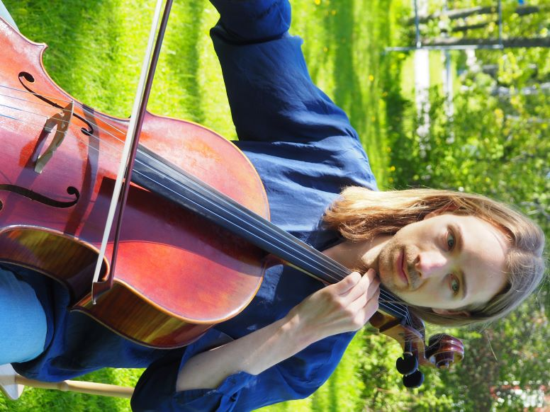
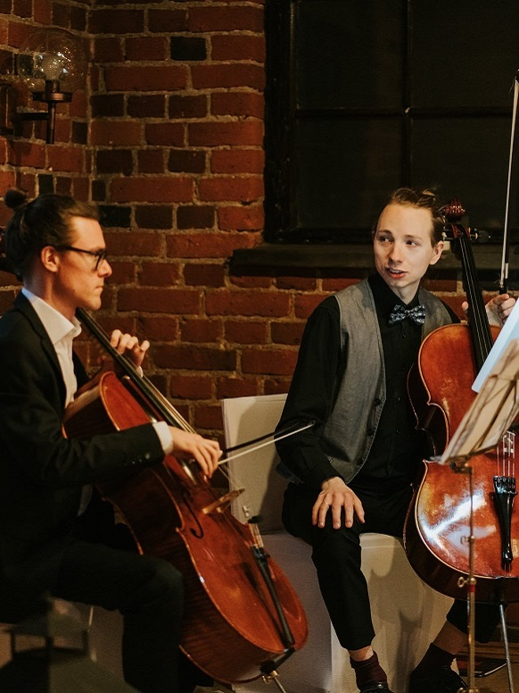
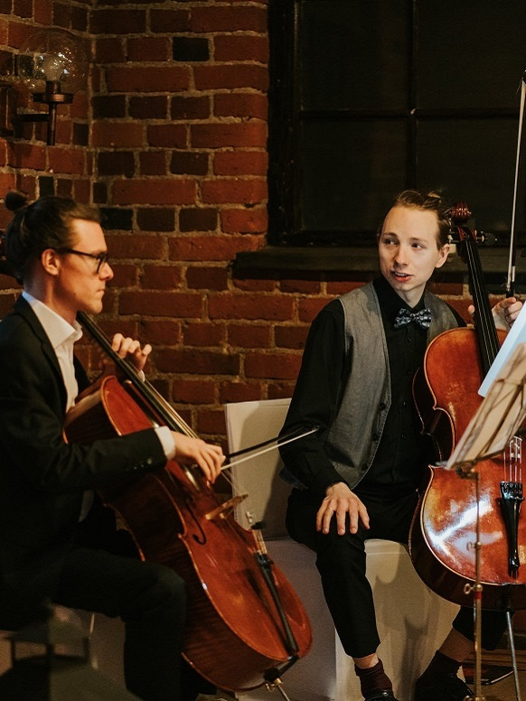
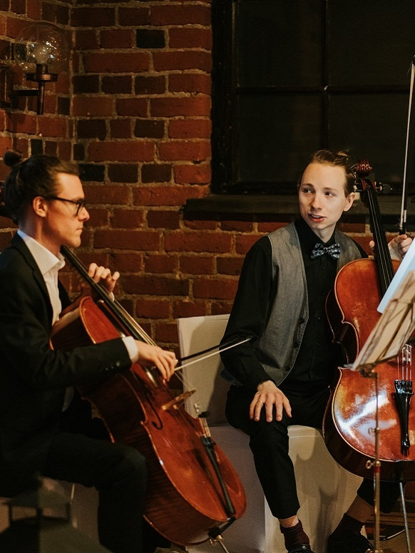
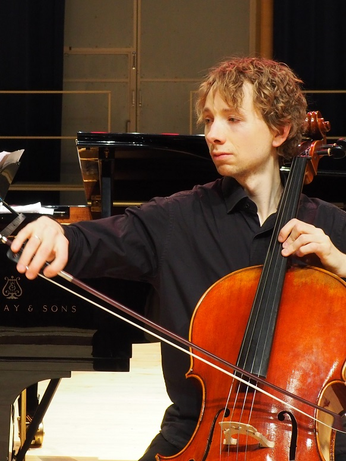
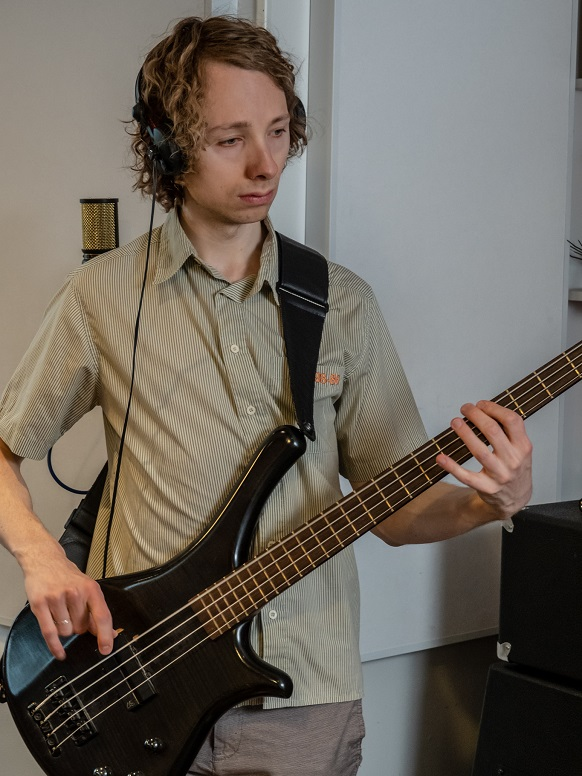
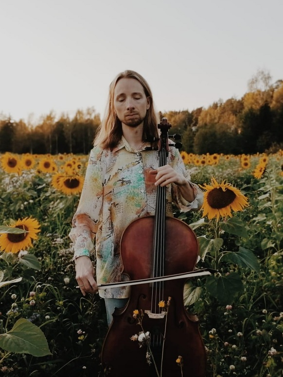
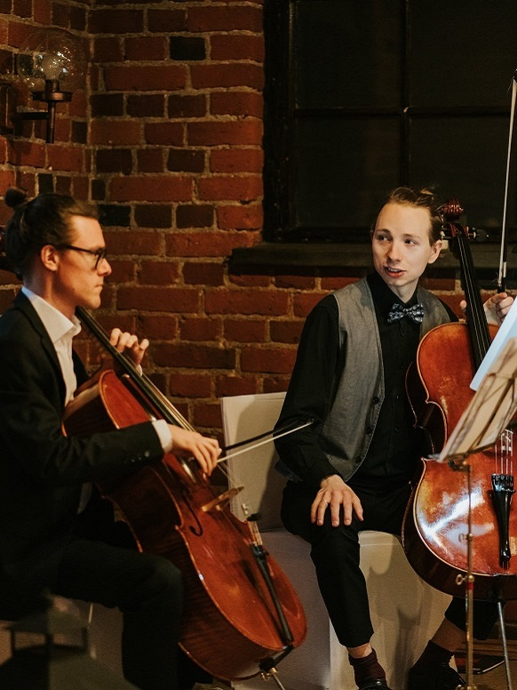

 

Sanna Koskimäki




English
/ Suomi
Sellisti Vertti Viitasaari
CV📧 viitasaari.vertti@gmail.com / ☎ 050 345 3950 / 📸 @vviitasaari

📧 viitasaari.vertti@gmail.com / ☎ 050 345 3950 / 📸 @vviitasaari